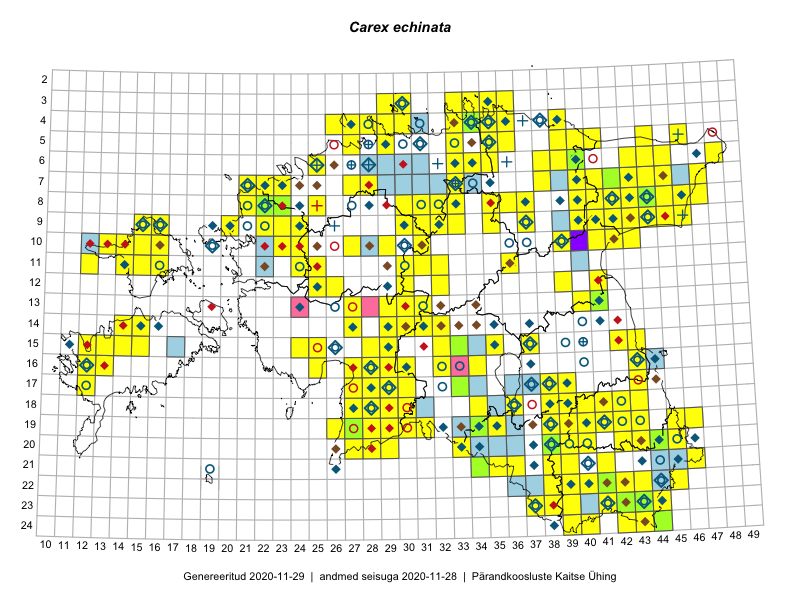

Carex echinata
Uuendatud: 2016-12-01
Kaardile koondatud taksonid: Carex echinata Murray

Kaart põhineb 213 kirjel, neist vaatlusi 212 ja eksemplare 1.
Kuvatud viited 20 esimesele andmebaasikirjele, ülejäänud PlutoFis
- Malle Leht: 2015-07-09: : ala
- Toomas Kukk, Eerik Leibak: 2015-08-09: 14-15: ala
- Ott Luuk, Toivo Sepp: 2015-07-29: 09-31: ala
- Ott Luuk, Peedu Saar: 2015-08-13: 24-44: ala
- Ott Luuk, Peedu Saar: 2015-08-13: 24-43: ala
- Ott Luuk, Peedu Saar: 2015-08-12: 23-43: ala
- Toomas Kukk, Eerik Leibak: 2015-08-11: 09-15: ala
- Toomas Kukk, Eerik Leibak: 2015-08-11: 09-16: ala
- Peedu Saar, Liina Oja: 2015-07-20: 08-44: ala
- Peedu Saar, Liina Oja: 2015-07-21: 06-44: ala
- Peedu Saar, Liina Oja: 2015-07-22: 08-45: ala
- Malle Leht: 2015-07-27: 18-40: ala
- Malle Leht: 2015-07-08: : ala
- Peedu Saar, Liina Oja: 2015-07-24: 09-45: ala
- Peedu Saar: 2015-08-11: 13-41: ala
- Peedu Saar, Ott Luuk: 2015-08-12: 23-42: ala
- Ott Luuk, Toivo Sepp: 2015-07-12: 11-31: ala
- Rein Kalamees, Kersti Püssa: 2015-08-25: 03-35: ala
- Peedu Saar, Eerik Leibak: 2015-08-16: 12-39: ala
- Rein Kalamees, Kersti Püssa: 2015-09-11: 06-34: ala